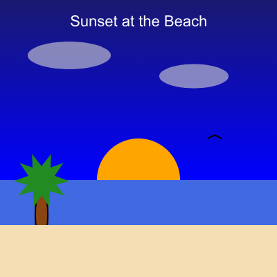
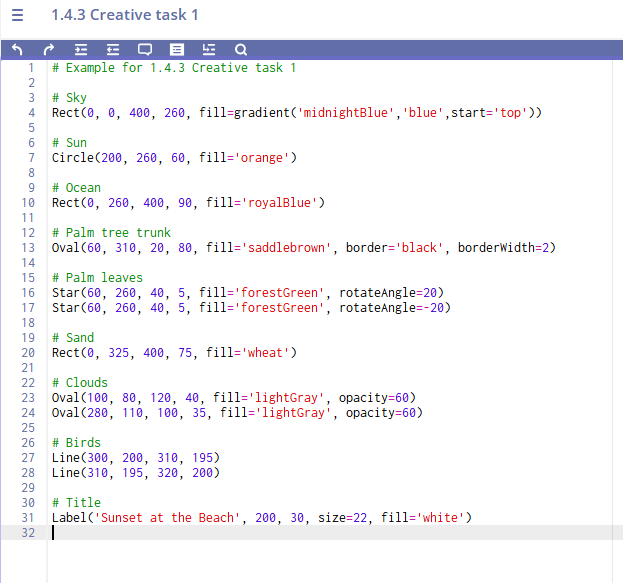

Unit 1 Creative Task
Create an original visual scene using CMU Graphics
Unit 1 Creative Task 1 (Mastery Grade)
Build in CMU: 1.4.3 Creative Task 1 (CMU CS Academy)
Submit in CMU: Click Submit when finished
Submit in Schoology: Upload ONE PDF before the due date (planning + screenshot + reflection)
Purpose
You will create an original visual scene / illustration using only Unit 1 CMU Graphics concepts (drawing shapes, positioning, color, borders, and layering). This is practice for building open-ended projects and documenting your work.
What You Will Create
Choose one:
- A scene from real life (park, room, city, desert, classroom, sports field, etc.)
- A mood/theme illustration (calm, chaotic, joyful, lonely, mysterious, etc.)
- A simple visual story (something happening in the picture)
- A "poster-style" design with a message and visuals
Unit 1 Limit
This project should only use drawing + styling concepts from Unit 1.
Not used yet: events, variables, functions, conditionals, loops, lists.
Program Requirements (CMU Code)
Your program must include:
- At least 8 total shapes
- At least 4 different shape types (choose from: Circle, Star, Rect, Oval, Line, Label, Polygon)
- At least 3 different optional parameters used intentionally (examples: fill, border, borderWidth, opacity, rotateAngle, label size/font)
- Layering (overlapping shapes to create detail/depth)
- Color variety (named colors and/or rgb(r,g,b))
Step-by-Step: What To Do
- Create a digital document for your PDF (Google Doc, Word, etc.). Title it:
Unit 1 Creative Task 1 – FirstName LastName - Complete the Planning Section (copy/paste the questions below into your document and answer them).
- Build your program in CMU: go to 1.4.3 Creative Task 1 and code your scene.
- Take a screenshot of your final program output (the picture on the canvas) and insert the screenshot into your document.
(The screenshot must clearly show your finished scene.) - Submit in CMU: click Submit inside CMU for 1.4.3 Creative Task 1.
- Complete the Reflection Section (copy/paste the questions below and answer them).
- Export as ONE PDF and upload it to this Schoology assignment before the due date.
PDF Contents (Exactly What Must Be Included)
- Planning Section (answers to all planning questions)
- Screenshot of your final canvas output
- Reflection Section (answers to all reflection questions)
Planning Questions (Design & Development Guide)
- Description: What are you creating? What is the purpose or theme of your scene?
- Scene Elements: List at least 6 specific objects you will include (ex: sun, mountains, robot, desk, tree, sign, etc.).
- Layout Plan: Where will your main objects go on the canvas? (Describe positions using words or approximate coordinates.)
- Layering Plan: What should be in the background, middle ground, and foreground?
- Color Plan: What colors will you use and why? (Mood/theme matters.)
- Optional Parameters Plan: Which 3 optional parameters will you use intentionally? Explain what each will improve.
- Success Criteria: How will you know your design is "finished" and successful?
Reflection Questions (Creative Task Reflection)
- Difficulties & Opportunities: Describe one challenge you faced OR one improvement you added while coding. What changed from your original plan?
- Key Coding Elements: List at least 5 important lines or sections of your code and explain what each one does for your scene.
- Design Choices: Identify two choices you made (colors, layering, shapes) that improved the final result. Why were they effective?
- Future Goals: If you had more time, what would you add or improve? Be specific.
What To Submit
- CMU: Submit your program in 1.4.3 Creative Task 1 using the Submit button.
- Schoology: Upload ONE PDF that contains:
- Planning answers
- Screenshot of final output
- Reflection answers
Mastery Rubric
This is a Mastery grade. To earn Mastery, you must meet the Mastery column in all categories.
| Category | Mastery | Approaching | Not Yet |
|---|---|---|---|
| CMU Program Requirements | Meets all requirements: • 8+ shapes • 4+ shape types • 3+ optional parameters used intentionally • layering/overlap used • color variety present |
Missing one requirement OR usage is minimal/accidental (ex: optional parameters used but not meaningful). | Missing two or more requirements OR scene is incomplete. |
| Visual Design & Purpose | Scene has a clear theme/purpose. Layout is intentional. Layering and color choices support the goal. | Theme/purpose exists but is unclear OR design feels somewhat random/unpolished. | No clear purpose/theme OR minimal effort in design. |
| PDF Planning Section | All planning questions answered with specific details that match the final program. | One planning question is missing OR multiple answers are too vague to guide building. | Two or more planning questions missing OR planning does not match the final program. |
| Screenshot in PDF | Screenshot is included and clearly shows the final canvas output. | Screenshot included but unclear/cropped/low quality (hard to see the full scene). | No screenshot included. |
| PDF Reflection Section | All reflection questions answered thoughtfully. Explanations match the student's actual code and design choices. | All questions answered but responses are brief/generic OR missing important details. | One or more reflection questions missing OR responses do not match the project. |
| Submission Requirements | CMU submitted (Submit clicked) AND one PDF uploaded to Schoology on time. | One part is missing or late (CMU submit or PDF upload). | CMU not submitted and/or no PDF uploaded. |
EXEMPLAR: Unit 1 Creative Task
Below is an example of a high-quality project that would meet (and exceed) expectations for the Unit 1 Creative Task.
PART 1 – DESIGN & DEVELOPMENT GUIDE (Planning)
1. Description
I am creating a beach sunset scene. The purpose of my program is to show a peaceful evening at the ocean with the sun setting over the water, palm trees on the beach, and a small boat in the distance. I want the scene to feel calm and relaxing.
2. Scene Elements
The objects I plan to include are:
- Sky background
- Ocean
- Setting sun
- Two palm trees
- Sand/beach area
- A small sailboat
- Clouds
- Birds made from lines
- A title label
3. Layout Plan
- The sky will take up the top 2/3 of the canvas.
- The ocean will be a large rectangle across the middle.
- The sand will be at the bottom.
- The sun will be centered horizontally near the horizon.
- Palm trees will be on the left and right sides in the foreground.
- The boat will be small and near the horizon to look far away.
- Clouds will be placed near the top of the canvas.
4. Layering Plan
- Background layer: sky and ocean
- Middle layer: sun, clouds, boat
- Foreground layer: palm trees, sand, birds, and label
- This layering will help create depth in the scene.
5. Color Plan
- Sky: gradient blues and purples to show sunset
- Ocean: darker blue
- Sun: bright orange and yellow
- Sand: tan
- Palm trees: brown trunks and green leaves
- Clouds: light gray
- Boat: dark silhouette color
- These colors should create a warm, calm feeling.
6. Optional Parameters Plan
I will intentionally use at least three optional parameters:
fill– to give each shape meaningful colorsborder/borderWidth– to outline the palm trees and boatopacity– to make clouds slightly see-throughrotateAngle– to angle the palm tree leaves
7. Success Criteria
I will know my design is successful if:
- Someone can clearly recognize the scene as a beach sunset
- All required elements are included
- The picture looks layered and intentional instead of random
PART 2 – SCREENSHOT
Example Screenshot:
Screenshot Description:
The screenshot shows a full 400x400 CMU Graphics canvas. The top half is a purple-blue sky. A large orange sun sits on the horizon. Below it is a dark blue ocean rectangle. Tan sand fills the bottom. Two palm trees frame the edges of the image. A small sailboat floats in the distance, and light gray clouds fade into the sky with reduced opacity. A label at the top reads "Sunset at the Beach."
PART 3 – CREATIVE TASK REFLECTION
1. Difficulties & Opportunities
One difficulty I faced was getting the palm tree leaves to look natural. At first they were all straight and looked unrealistic. I decided to use the rotateAngle optional parameter on each leaf to tilt them in different directions. This changed my original plan and made the trees look much better.
Another challenge was placing the sun exactly on the horizon line. I used the inspector to find the exact y-coordinate where the ocean rectangle began and adjusted the sun position until it looked correct.
2. Key Coding Elements
Here are five important parts of my code and what they do:
Rect(0, 0, 400, 260, fill=gradient('midnightBlue','purple'))
This creates the sky background using a gradient color.Rect(0, 260, 400, 90, fill='royalBlue')
This draws the ocean across the canvas.Circle(200, 260, 60, fill='orange')
This creates the setting sun on the horizon.Oval(60, 310, 20, 80, fill='saddlebrown', border='black', borderWidth=2)
This is one palm tree trunk with a border to give it detail.Label('Sunset at the Beach', 200, 30, size=22, fill='white')
This adds a title to the scene so the viewer knows the theme.
3. Design Choices
Two choices that improved my final result:
- Using opacity on the clouds: I set the cloud shapes to opacity=60 so they blended into the sky instead of looking like solid blobs. This made the scene more realistic.
- Layering the boat behind the trees: By drawing the boat earlier in the code and the palm trees later, the trees appear in front, which creates a sense of depth.
4. Future Goals
If I had more time, I would:
- Add more details like seashells and footprints in the sand
- Create a second version with a sunrise instead of sunset
- Experiment with more advanced gradients for the sky
SAMPLE CODE (What the Student Program Might Look Like)
Below is a shortened sample of what the CMU code for this exemplar might resemble:
